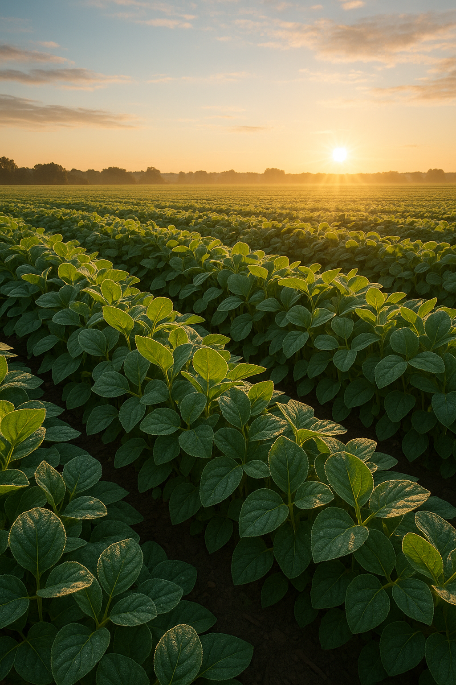

O Agrinho é o principal programa de responsabilidade social do Sistema FAEP (Federação da Agricultura do Estado do Paraná). Operado pelo SENAR-PR em conjunto com a FAEP, conta com ampla parceria do Governo do Paraná (envolvendo várias Secretarias de Estado), prefeituras municipais e diversas empresas e instituições públicas e privadas.
Completando 26 anos de atuação (criado em 1995 e implementado em 1996), o programa atinge todos os municípios paranaenses. Anualmente, envolve cerca de 800 mil crianças e mais de 50 mil professores da educação infantil, ensino fundamental e educação especial da rede pública.
O Agrinho leva às escolas uma proposta pedagógica inovadora, baseada em uma visão complexa da realidade, na inter e transdisciplinaridade e na pedagogia da pesquisa. Originalmente criado para levar informações sobre saúde e segurança pessoal e ambiental, especialmente a crianças rurais, consolidou-se como uma ferramenta eficaz para abordar temas sociais relevantes nos currículos escolares.
Seu material didático exclusivo é fundamentado por especialistas renomados, nacionais e internacionais, de grupos de pesquisa em rede. O programa incentiva a pesquisa, defendendo uma educação crítica, criativa e autônoma, onde professores e alunos se tornam produtores de conhecimento. As atividades são recebidas com grande entusiasmo pela comunidade escolar e vêm se aprimorando em qualidade e criatividade a cada ano.
